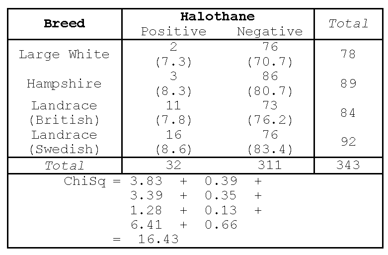
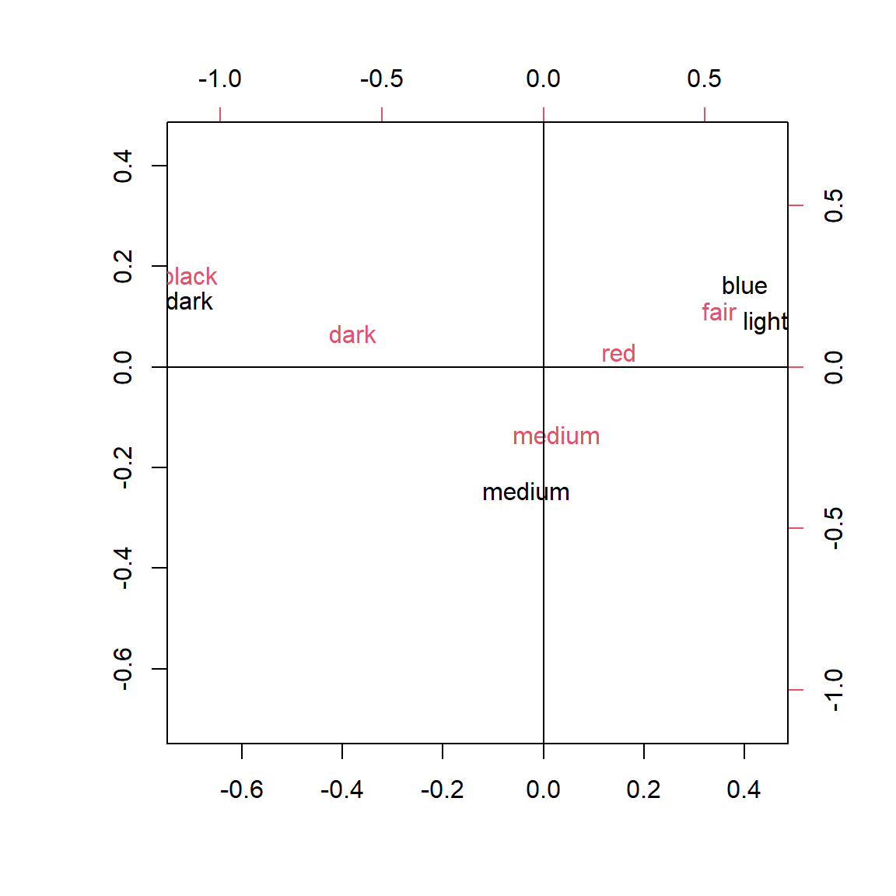

Code
library(tidyverse)
theme_set(theme_minimal())“….the Chi-square statistical test is one of twenty important scientific breakthroughs of the 20th century…”
— Ian Hacking (1984)
In this chapter we consider tests of fit and tests of association. Tests of fit and association are used to determine whether the data complies with some hypothesis. In the first case, Goodness of Fit tests are used to determine whether the frequency distribution of some variable observed in sample data (for example the frequencies associated with the two categories of gender) complies with some hypothesised frequency breakdown. This test would involve comparing the number of males and females in the sample with the numbers of males and females expected under the hypothesis. Sometimes it is the Goodness of Fit of a particular distribution which is in question. For example, can we assume that the residuals follow a Normal distribution? We have already seen in Chapters 3 and 4 how Normal probability plotting can be used to asses for normality. Chi-squared Goodness of Fit Tests can also be used to test whether the data follows a specific distribution.
Tests of association, on the other hand, are tests for a relationship between two categorical variables when the data is arranged as a cross-tabulation (contingency table). Observed frequencies are compared with the frequencies which would be expected if the rows and columns of the tables were independent. If they are not independent, then we can use a numerical and graphical technique called Correspondence Analysis to help us explore the ‘correspondence’ (i.e. association) of the various row and column categories. Correspondence Analysis will be introduced only at a very basic level.
In this section, we consider a row of numbers and consider the question, How do observed frequency counts compare with known, or assumed, expected counts? Consider the following hypothetical example. Of the people who emigrated from New Zealand in a particular year, the percentages in three age categories were as shown in Table 1.
library(tidyverse)
theme_set(theme_minimal())emigration <- tibble(
Age = c( "Up to 30 years", "31-40 years", "41 years and older"),
Percentages = c(65, 25, 10)
)
emigration| Age | Percentages |
|---|---|
| Up to 30 years | 65 |
| 31-40 years | 25 |
| 41 years and older | 10 |
Assume that in a random sample of 200 emigrating from Wellington, the numbers in the three age categories were 100, 55 and 45 respectively (data fictitious). Are these numbers compatible with the yearly percentages? For the first category we would have expected 65% of 200 = 130; for category B, expected number is 25% of 200 = 50; for C, expected number is 10% of 200 = 20. We can then form a table of observed and expected frequencies as shown in Table 2.
emigration <- emigration |>
mutate(
`Expected counts` = c(130, 50, 20),
`Observed counts` = c(100, 55, 45)
)
emigration| Age | Percentages | Expected counts | Observed counts |
|---|---|---|---|
| Up to 30 years | 65 | 130 | 100 |
| 31-40 years | 25 | 50 | 55 |
| 41 years and older | 10 | 20 | 45 |
Clearly, the composition in the random sample differs from the overall New Zealand percentages in that particular year. The question is whether these differences can be attributed simply to chance variation, or whether they indicate a definite regional difference between the emigration pattern from Wellington and that of New Zealand as a whole?
To test whether the observed values differ significantly from the expected, the Chi-squared statistic is used. Notice that the Greek letter \(\chi\), chi, is pronounced “kai” as in the greeting “hi”.
\[\chi ^{2} =\sum _{1}^{c}\frac{\left({\text {Observed-Expected}}\right)^2 }{{\text {Expected}}} =\sum _{1}^{c}\frac{\left( O-E\right)^{2}}{E}\]
There are three points to be noted here:
The summation is over every cell (that is every count).
The Chi-squared statistic has a continuous distribution. Like the t distribution, its shape depends on the degrees of freedom; in general, its curve is skewed to the right. With \(c\) categories, the degrees of freedom is equal to \((c-1)\).
We are employing the Chi-squared statistic with data which consists of integers. That is, the data are discrete rather than continuous. In consequence, the above formula for Chi-squared statistic is only approximate but the approximation is very good if each expected value is greater than 5 and it is often good even if some expected values are as small as 1.
For the emigration example,
\[ \begin{aligned} \chi^2 &= (100-130)^2/130 + (55-50)^2/50 + (45-20)^2/20 \\ &= 6.92 + 0.5 + 31.25 \\ &= 38.67 \end{aligned} \]
with 2 degrees of freedom.
From the tables of \(\chi^2\) distribution, 38.67 is much larger than the tabulated value of 13.82 so that the area (probability) greater than this value is only 0.001. In other words, the probability of such a high value of Chi-squared by chance is very small, indeed less than 0.001 or 0.1%. This leads us to reject, at the 0.1% level, the assumption that the age composition of emigrants (from Wellington) agrees with the overall New Zealand yearly figures. This suggests a difference in the age distribution of emigrants. Notice that the contributions to the Chi-squared statistic are reasonably small for categories A and B, but category C contributes a large value of 31.25. It would appear that the emigrants from Wellington are older.
There is an interesting historical situation in which Chi-squared statistics were used to demonstrate the experimental results had been fudged. Gregor Mendel (1822-1884) has some claim to being called the father of modern genetics. Freedman, Pisani, and Purves (2007) in their book ‘Statistics’ gave the following explanation.
“Mendel’s experiments were all carried out on garden peas. Pea seeds are either yellow or green, and a plant can bear seeds of both colours. Mendel bred a pure yellow strain, that is, a strain in which every plant in every generation had only yellow seeds; and separately he bred a pure green strain. He then crossed plants of the pure yellow strain with plants of the pure green strain. For instance, he used pollen from the yellows to fertilise ovules on plants of the green strain. (The alternative method using pollen from the greens to fertilise plants of the yellow strain, gave exactly the same results). The seeds resulting from a yellow-green cross, and the plants in to which they grow, are called first-generation hybrids. First-generation hybrid seeds are all yellow, indistinguishable from seeds of the pure yellow strain. So the green seems to have disappeared completely.
”These first-generation hybrid seeds grew into first-generation hybrid plants which Mendel crossed with themselves, producing second-generation hybrid seeds. Some of these second-generation seeds were yellow, but some were green. So the green disappeared for one generation, but reappeared in the second. Even more surprising, the green reappeared in a definite simple proportion: of the second-generation hybrid seeds, about 75% were yellow and 25% were green.
“What is behind this regularity? To explain it, Mendel postulated the existence of the entities now called genes. The genes of the yellow strain were dominant while the genes of the green strain were recessive. This caused the yellow colouring of the first-generation hybrids.”
Of course, the situation becomes more complicated if more than one attribute is considered. In one of Mendel’s trials he also considered whether the peas were smooth or wrinkled in appearance. The ratio for four types of peas was expected to be 9:3:3:1. The observed and expected numbers in the four categories were as shown in Table 3.
Mendel <- tibble(
`Type of pea` = c("Smooth yellow",
"Wrinkled yellow",
"Smooth green",
"Wrinkled green"),
`Expected counts` = c(313, 104, 104, 35),
`Observed counts` = c(315, 101, 108, 32)
)
Mendel| Type of pea | Expected counts | Observed counts |
|---|---|---|
| Smooth yellow | 313 | 315 |
| Wrinkled yellow | 104 | 101 |
| Smooth green | 104 | 108 |
| Wrinkled green | 35 | 32 |
The observed results are very close to those expected and therefore a very small Chi-squared value is obtained. Sir R A Fisher (1890–1962) has some claim to being the father of inferential statistics. He examined the results of a number of Mendel’s experiments and discovered that, without exception, the Chi-squared values were much smaller than expected. While one can be lucky on a few occasions obtaining results close to what a theory suggests, the probability that the Chi-squared values would be small in every experiment is so low as to be unbelievable. Did the great Mendel cheat? Fisher (1936) gave him the benefit of the doubt but noted that Mendel’s assistant may well have been aware of the anticipated results and consciously, or unconsciously, had classified the peas in the appropriate cell. After all, it was not always easy to classify some of the pea seeds. The moral is that some people are just too helpful.
When testing for the goodness of fit for a distribution, observations in various non-overlapping ranges are classified into categories and a frequency count is obtained for each category or range. These (observed) frequency counts are compared to the counts which would be obtained if the hypothesised distribution fitted the data exactly. We call these counts the expected counts. In general one assumes that the parameters of the hypothesised distribution equal the estimates obtained from the data. Thus we are effectively just testing whether the shape of the hypothesised distribution is correct.
For example if a set of data has a sample mean of 10 and sample standard deviation of 2 and we wish to test whether a Normal distribution is appropriate for these data, we hypothesise a Normal distribution with a mean of 10 and a standard deviation of 2. The following Chi-squared statistic can be used to test whether the hypothesised distribution describes the data reasonably well. The idea is to split the number line into, say, \(c\) non-overlapping intervals spanning the range of the data. The observed and expected frequency of data in each interval is then compared, using
\[\chi ^{2} =\sum _{1}^{c}\frac{\left({\text {Observed-Expected}}\right)^2 }{{\text {Expected}}} =\sum _{1}^{c}\frac{\left( O-E\right)^{2}}{E},\]
where again we sum over all \(c\) categories. For example, for \(n=100\) data we would expect 15.87% to be \(\leq 8\), 34.13% to be greater than 8 and \(\leq 10\) , 34.13% to be greater than 10 and \(\leq 12\), and 15.87% to be \(>12\). We would compare our observed counts with these expected ones. Note that expected counts need not be integers, and should not be rounded in the calculation of \(\chi^2\), especially if they are small as that can introduce substantial round-off error into \(\chi^2\).
The degrees of freedom for this test equals the number of data categories minus one more than the number of parameters estimated \(c-1-2 = c-3\) in this case). These tests were covered in your first-year paper. You should revise your notes on them. Note that we have seen in Chapter 4 that it is possible to test for normality using an tests such as Shapiro-Wilk test.
Contingency tables are frequency counts arranged in a two way table. We can test for independence between the rows and columns of such a table using a Chi-squared statistic. There are two main points which need to be noted:
Expected values can be obtained by assuming that the row variable is independent of the column variable. In practice, this means that the expected count for cell \((i,j)\) is given by \(E_{ij}\) where
\[E_{ij} = (T_i \times T_j)/n\]
in which \(T_i\) = total for row \(i\), \(T_j\) = total for column \(j\) and \(n\) = overall total count
The degrees of freedom are given by \((r-1)\times(c-1)\) where \(r\) is the number of rows and \(c\) is the number of columns.
These points will be illustrated in the example below on Porcine Stress Syndrome. The Chi-squared statistic is constructed in the same way as before, i.e.
\[\chi ^{2} =\sum _{i=1}^{r}\sum _{j=1}^{c}\frac{\left({ O}_{{ ij}} { -E}_{{ij}} \right)^{{ 2}} }{{ E}_{{ij}} }.\]
A useful way of thinking about the \(\chi ^2\) is the following. If we think of the difference between the observed and expected values as a residual, then we can write:
\[\chi ^{2} =\sum \frac{\left({\text {O-E}}\right)^{2} }{{\text E}} =\sum \frac{\left({\text {residual}}\right)^{2} }{{\text {fit}}}.\]
In more theoretical courses, you may learn that data expressed as counts often follows a Poisson distribution in which the mean equals the variance. If you substitute variance for fit in the formula, you get
\[\chi ^{2} =\sum \frac{\left({\text {residual}}\right)^{2} }{{\text {variance}}} =\sum \left(\frac{{\text {residual}}}{{\text {std dev}}} \right)^{2}.\] which looks like a sum of squared standardised residuals. As noted in chapter 6 any standardised residuals which are greater than 2 (approximately) in absolute value can be regarded as significant. Squaring this we find that any cell which makes a contribution of more than 4 to the Chi-squared statistic is a significant source of the dependence between rows and columns. So this idea helps in the interpretation of contingency tables. Any cells contributing more than 4 to the Chi-squared statistic should be studied carefully in order to gain an understanding regarding the nature of any dependence between the rows and columns.
Porcine Stress Syndrome (PSS) can result in the development of pale, soft meat in pigs and, under conditions of stress, sudden death. It can therefore result in severe economic loss. It is believed to be controlled by a single gene and its incidence could therefore be reduced by a selective breeding program. In a survey of its incidence, the following results were obtained for four major breeds. (The presence of PSS can be detected by a positive reaction to the breathing of halothane). The observed counts are shown in Table 4.
dpss <- tibble(
Breed = c("Large White", "Hampshire", "Landrace(B)", "Landrace(S)"),
`Halothane positive` = c(2, 3, 11, 16),
`Halothane negative` = c(76, 86, 73, 76)
)
library(janitor)
dpss_with_totals <- dpss |>
adorn_totals(
name = c("Row total", "Column total"),
where = c("row", "col")
)
dpss_with_totals| Breed | Halothane positive | Halothane negative | Column total |
|---|---|---|---|
| Large White | 2 | 76 | 78 |
| Hampshire | 3 | 86 | 89 |
| Landrace(B) | 11 | 73 | 84 |
| Landrace(S) | 16 | 76 | 92 |
| Row total | 32 | 311 | 343 |
Expected values are calculated assuming independence between the rows and columns. This gives the numbers in parentheses in Figure 1.

For example the expected value in the (3, 2) cell, the number of British Landrace pigs which gave a negative test for halothane, is \[E_{3,2} = T_3 \times T_2 /n = 84 \times 311/343 = 76.2.\] The Chi-squared statistic is calculated as before using the formula \(\chi^2 = \sum(O_{ij} - E_{ij})^2/E_{ij}\). The Chi-square of 16.43 is associated with \((4-1)\times (2-1) = 3\) degrees of freedom, and is therefore significant at the 5% level and at the 0.5% level. (Note that the tabulated value or critical value equals 7.81 at 5% significance level; and 12.8 at the 0.5% level).
Hence, there is strong statistical evidence that there are differences between breeds in the incidence of porcine stress syndrome. In other words, the breed is not independent of the result of the halothane test.
Notice that the large counts in the second column (halothane negative) lead to large expected values but low contributions to the Chi-squared statistics (0.38, 0.35, 0.13 and 0.66). This is not surprising as each of these terms is divided by a large expected value. On the other hand, the small observations of the first column lead to small expected values but larger contributions to the Chi-squared statistic. Any Chi-squared contribution in excess of four (as explained previously) should be interpreted. In this example it is clear that Landrace (Swedish) pigs are more prone to porcine stress syndrome than are the other three breeds.
Another view of the idea of degrees of freedom can be obtained by noting that if the three expected values at the top of Column 2 are calculated (70.7, 80.7 and 76.2) then the remaining expected value can be found by subtraction from the appropriate row or column totals. Thus if the row and column totals are known, then only three numbers inside the contingency table are free before the whole table of numbers is then determined.
The Chi-squared statistic should only be used with frequency counts. Sometimes, researchers convert the counts in the cells of a table to percentages of the total. For example in Figure 1, the cell counts could be divided by 343 and multiplied by 100 to give percentages. In this case, the numbers in the cells would be reduced and the Chi-squared statistic likewise would be reduced from 16.43 to 16.43/343 = 0.048. An incorrect conclusion of independence of rows and columns would be drawn from this statistic.
If the expected value in a cell is small, the contribution to the Chi-squared statistic may be spuriously inflated. It was suggested earlier that an expected value less than 5 may lead to some concern and a very small value of less than 1 should sound warning bells. We suggest the following procedure:
If the Chi-squared statistic is small enough to not be significant, there is no problem.
If the Chi-squared statistic is significant in comparison with tabulated values, then consider the contributions of each cell. If cells with large expected value (that is, greater than 5) contribute a large amount to the Chi-squared statistic, again there is no problem. If cells with expected values less than 5 yield large contributions to the Chi-squared statistic, now you can worry and any declaration of significant values of Chi-squared statistic should be treated with caution.
Consider the data on the effects of parturition in sows shown in Table 5.
dsow <- tibble(
Condition = c("Starvation", "Overlain", "Anaemia", "Infections", "Birth Defect"),
`Control` = c(8, 8, 0, 3, 6),
`Injected` = c(10, 9, 12, 7, 2)
)
dsow_with_totals <- dsow |>
adorn_totals(
name = c("Row total", "Column total"),
where = c("row", "col")
)
dsow_with_totals| Condition | Control | Injected | Column total |
|---|---|---|---|
| Starvation | 8 | 10 | 18 |
| Overlain | 8 | 9 | 17 |
| Anaemia | 0 | 12 | 12 |
| Infections | 3 | 7 | 10 |
| Birth Defect | 6 | 2 | 8 |
| Row total | 25 | 40 | 65 |
In an experiment to consider the effects of parturition in sows, 19 pregnant sows were given intramuscular injections of the drug prostaglandin while another 19 pregnant sows served as controls. Of the piglets born to the control sows, 25 died and were autopsied in the first 3 days and, for the treated sows, 40 died and were autopsied in the first 3 days. The chi square test is shown in Figure 2 and then the R output follows.

# Make the variable "Condition" the row names
# so that the data frame contains only the
# two columns and 10 data points
dsow_dataonly <- dsow |>
column_to_rownames("Condition")
dsow_dataonly Control Injected
Starvation 8 10
Overlain 8 9
Anaemia 0 12
Infections 3 7
Birth Defect 6 2dsow_dataonly |> chisq.test()Warning in stats::chisq.test(x, y, ...): Chi-squared approximation may be
incorrect
Pearson's Chi-squared test
data: dsow_dataonly
X-squared = 13.118, df = 4, p-value = 0.01071Notice that there are four cells whose expected values are less than 5 (4.6, 3.8, 3.1 and 4.9) and their contributions to the Chi-squared statistic are (4.62, 0.19, 2.78 and 1.74). Without these contributions, the Chi-squared statistic would not be significant. The conclusion should then be that there is not enough evidence to conclude that the Chi-squared statistic is significant. So there is not sufficient evidence to conclude that the cause of death depends on whether the injection was given.
If the Chi-square test involves many small expected counts, then we may obtain the \(p\)-value for the chi square statistic by Monte Carlo simulation (i.e. without relying on the Chi-square approximation). This simulation procedure involves random sampling from the set of all possible contingency tables having the same row and column totals. The R function chisq.test() can do this for you.
dsow_dataonly |> chisq.test(simulate.p.value = TRUE)
Pearson's Chi-squared test with simulated p-value (based on 2000
replicates)
data: dsow_dataonly
X-squared = 13.118, df = NA, p-value = 0.006497As mentioned earlier, the Chi-square test is for actual counts and if you scale them you will get different results. For example, if we multiply Parturition counts by 100, and do the test, the conclusions will change.
dsow_dataonly_100 <- dsow_dataonly |>
mutate(Control = 100 * Control,
Injected = 100 * Injected)
dsow_dataonly_100 Control Injected
Starvation 800 1000
Overlain 800 900
Anaemia 0 1200
Infections 300 700
Birth Defect 600 200dsow_dataonly_100 |> chisq.test()
Pearson's Chi-squared test
data: dsow_dataonly_100
X-squared = 1311.8, df = 4, p-value < 2.2e-16We should also be careful when we combine two or more contingency tables into one. The association seen in a particular table may disappear after amalgamation. Simpson (1951) provided the theory on why this happens for contingency tables data and hence this paradox is known as Simpson’s paradox even though this was observed by others before him. Consider the following R outputs showing the ChiSq test for two separate groups and then the amalgamated group.
For Group 1 counts, the Chi-square test is shown below:
group1 <- cbind(c(80,30),
c(120,80))
group1 [,1] [,2]
[1,] 80 120
[2,] 30 80chisq.test(group1)
Pearson's Chi-squared test with Yates' continuity correction
data: group1
X-squared = 4.4809, df = 1, p-value = 0.03428For group 2 counts, the Chi-square test is shown below:
group2 <- cbind(c(20,25),
c(75,20))
group2 [,1] [,2]
[1,] 20 75
[2,] 25 20chisq.test(group2)
Pearson's Chi-squared test with Yates' continuity correction
data: group2
X-squared = 15.122, df = 1, p-value = 0.0001008For the amalgamated contingency table, we obtain-
all <- cbind(c(100,55),
c(195,100))
all [,1] [,2]
[1,] 100 195
[2,] 55 100chisq.test(all)
Pearson's Chi-squared test with Yates' continuity correction
data: all
X-squared = 0.053808, df = 1, p-value = 0.8166Evidently the association seen in the subgroups is lost after amalgamation.
The opposite can also happen. That is, when populations are separated somewhat parallelly by a factor like Gender, the overall association may not filter to the same level of association for the two gender groups.
Assume that two observers independently classifying the same \(n\) items into the same \(k\) categories. The resulting contingency table becomes a \(k \times k\) square contingency table. In biostatistical studies, such square contingency tables are common. Often such contingency tables would have very low cell counts for the off-diagonal cells. The main interest with a square contingency table is the assessment or measurement of the agreement between rows and columns. So there is no need to perform any ChiSq test. Table 6 gives the religion of origin cross-classified by current religion using the six groupings in Britain (data taken from Breen and Hayes (1996)).
drel <- data.frame(
Row = c("R1", "R2", "R3", "R4", "R5", "R6"),
R1 = c(123, 10, 2, 0, 0, 1),
R2 = c(2, 420, 21, 8, 4, 3),
R3 = c(0, 9, 102, 2, 0, 0),
R4 = c(0, 1, 1, 15, 0, 1),
R5 = c(1, 4, 5, 0, 7, 1),
R6 = c(48, 217, 54, 6, 5, 62)
)
drel |>
adorn_totals(
name = c("ROW TOTAL", "COL TOTAL"),
where = c("row", "col")
)| Row | R1 | R2 | R3 | R4 | R5 | R6 | COL TOTAL |
|---|---|---|---|---|---|---|---|
| R1 | 123 | 2 | 0 | 0 | 1 | 48 | 174 |
| R2 | 10 | 420 | 9 | 1 | 4 | 217 | 661 |
| R3 | 2 | 21 | 102 | 1 | 5 | 54 | 185 |
| R4 | 0 | 8 | 2 | 15 | 0 | 6 | 31 |
| R5 | 0 | 4 | 0 | 0 | 7 | 5 | 16 |
| R6 | 1 | 3 | 0 | 1 | 1 | 62 | 68 |
| ROW TOTAL | 136 | 458 | 113 | 18 | 18 | 392 | 1135 |
The agreement between the origin and current religion can be visualised using the agreement plot available in the vcd package (Figure 3). (Note, some functions require the data to be in numerical matrix format.)
library(vcd)Loading required package: griddrelmatrix <- drel |>
column_to_rownames("Row") |>
as.matrix()
agreementplot(drelmatrix)
Evidently there is a strong agreement between rows and columns. One of the popular measures for measuring agreement is the Cohen’s kappa. This statistic is the diagonal sum of the relative frequencies, corrected for expected values and standardized by its maximum value. In case of complete agreement, the kappa coefficient will be unity. For the religion example, the kappa value is not actually high.
Kappa(drelmatrix) value ASE z Pr(>|z|)
Unweighted 0.4955 0.01825 27.15 2.526e-162
Weighted 0.3358 0.02030 16.55 1.733e-61This topic is not covered in depth. It is sufficient if you recognise the special form of two-way contingency table such as this one.
Correspondence Analysis is an exploratory statistical technique for assessing the interdependence of categorical variables whose data are presented primarily in the form of a two-way table of frequencies (or contingency table). Applied in an advanced way, the methodology can help researchers to “quantify the qualitative data” found in many disciplines. However we will introduce CA at a very basic level, just picking up on those aspects that can help one interpret a contingency table.
CA requires only a rectangular data matrix (cross-tabulation) of non-negative counts-but the number of rows and columns must be 3 or more. The rows and columns do not have to have predefined meanings but instead must represent the responses to categorical variables. Where there are just two variables (one each for rows and columns) the analysis is called Simple Correspondence Analysis. The analysis of cross-tabulations of three or more variables is called Multiple Correspondence Analysis. This is beyond the scope of this paper.
We shall illustrate some of the basic ideas behind CA using a simple example. Consider Table 7 of frequencies (or contingency table) of smokers in a random sample of 193 personnel (staff group) from an organisation (data from Correspondence Analysis in Practice by Greenacre, 1993). A significant association between smoking status and staff groupings can be observed with the Chi-square test.
dsmo <- tibble(
Groups = c("Junior employees", "Junior managers",
"Secretaries", "Senior employees", "Senior managers"),
None = c(18, 4, 10, 25, 4),
Moderate = c(57, 10, 13, 22, 5),
Heavy = c(13, 4, 2, 4, 2)
)
dsmo |>
adorn_totals(
name = c("ROW TOTAL", "COL TOTAL"),
where = c("row", "col")
)| Groups | None | Moderate | Heavy | COL TOTAL |
|---|---|---|---|---|
| Junior employees | 18 | 57 | 13 | 88 |
| Junior managers | 4 | 10 | 4 | 18 |
| Secretaries | 10 | 13 | 2 | 25 |
| Senior employees | 25 | 22 | 4 | 51 |
| Senior managers | 4 | 5 | 2 | 11 |
| ROW TOTAL | 61 | 107 | 25 | 193 |
Pearson's Chi-squared test
data: column_to_rownames(dsmo, "Groups")
X-squared = 15.672, df = 8, p-value = 0.04733Suppose we think that there are differences in the smoking status of the various staff groups. One way to investigate these differences would be to calculate row profiles. That is, we divide each entry in a particular row by the total for that row, and multiply by 100%. The set of percentages for each staff group are then called the row profile for that group. The row profiles are shown in Table 8 (ignore for a moment the row labelled “Row.Mass”).
dsmomatrix <- dsmo |>
column_to_rownames("Groups") |>
as.matrix()
rowtotal = rowSums(dsmomatrix)
rowprofile = dsmomatrix/rowtotal
coltotal = colSums(dsmomatrix)
colprofile = dsmomatrix/coltotal
Row.Mass = coltotal/sum(dsmomatrix)
Column.Mass = rowtotal/sum(dsmomatrix)
rowpf <- rbind(rowprofile, Row.Mass) |>
as.data.frame() |>
mutate_if(is.numeric, round, 3)
rowpf| None | Moderate | Heavy | |
|---|---|---|---|
| Junior employees | 0.205 | 0.648 | 0.148 |
| Junior managers | 0.222 | 0.556 | 0.222 |
| Secretaries | 0.400 | 0.520 | 0.080 |
| Senior employees | 0.490 | 0.431 | 0.078 |
| Senior managers | 0.364 | 0.455 | 0.182 |
| Row.Mass | 0.316 | 0.554 | 0.130 |
Comparing the profiles among the various staff groups we see that they generally have a similar shape (small % of ‘none’, large % of ‘moderate’ and small % of ‘heavy’) but there are subtle differences. In particular a much larger percentage of secretaries and senior employees were in the ‘none’ group, than was the case for junior employees and junior managers, with senior managers in between. The row ‘mass’ can be interpreted as the marginal (average) profile for the smoking status and is found by dividing each column total by the overall total. The profiles can also be plotted as in Figure 4 to facilitate comparisons.
rowprofile_long <- rowprofile |>
as.data.frame() |>
rownames_to_column(var = "Staff Group") |>
pivot_longer(cols=None:Heavy,
names_to = "Smoking Status",
values_to = "Row Profiles"
)
rowprofile_long |>
ggplot() +
aes(x = `Staff Group`,
y = `Row Profiles`,
colour = `Smoking Status`,
shape = `Smoking Status`,
group = `Smoking Status`) +
geom_point() +
geom_line() +
coord_flip()
An alternative analysis could be based on the column percentages (column profiles) by dividing the entries in each column of the Table 9 by each column’s total.
colpf <- cbind(colprofile, Column.Mass) |>
as.data.frame() |>
mutate_if(is.numeric, round, 2)
colpf| None | Moderate | Heavy | Column.Mass | |
|---|---|---|---|---|
| Junior employees | 0.30 | 2.28 | 0.12 | 0.46 |
| Junior managers | 0.04 | 0.16 | 0.16 | 0.09 |
| Secretaries | 0.40 | 0.12 | 0.03 | 0.13 |
| Senior employees | 0.41 | 0.88 | 0.04 | 0.26 |
| Senior managers | 0.04 | 0.08 | 0.08 | 0.06 |
The ‘mass’ column is then based on the total’ column in Table 9, and can be interpreted as the marginal percentage of employees in each staff group. Looking at the column profiles displayed in Table 9, for example, we notice that of the 107 moderate smokers in the survey, 53.3% are junior employees compared to 45.6% of the sample as a whole. Moreover this profile is fairly similar to that of the ‘heavy’ smokers. The profile for non-smokers, however, is quite different. In particular more than average of the senior employees are non-smokers. Whether we analyse the data by considering the row profiles or the column profiles, we should arrive at a similar conclusion. In each case we can compare the row (column) profile to the row (column) average (mass). As we should come to much the same conclusion either way, this approach is known as ‘symmetric consideration’ of the rows and columns.
There are further methods available to investigate the dependency in a contingency table which are beyond the scope of this course. However we will consider one very useful graph called a Symmetric Plot. The way this graph is created is that techniques from Linear Algebra are used to define two principal trends within the data. Technically the trends are referred to as inertia, which is a concept we will not go into. What is needful is to know that the trends are represented as the axes of the plot. As these axes are devised automatically – based purely on the numbers rather than the context – it can be that they are not easy to interpret. But often they are easily interpreted, especially if you apply a little ‘lateral thinking’. So the axes can give a real insight into the data. And even when the axes themselves are not interpretable, this still does not prevent us getting some useful information from the plot. Plotted on this graph are points, corresponding to the row and column categories of the contingency table. The actual location of the points depends on the axes. The main thing is that we can interpret points that are ‘near’ as being related in some way, while points that are far apart are in some sense opposite.
library(MASS, exclude = "select")
dsmomatrix |>
corresp(nf=2) |>
plot(cex=0.75, xlim=c(-0.4, .45))
abline(v=0)
abline(h=0)
Looking at the example of a symmetric plot in Figure 5, we see that Senior Employees are very close to the None category of smokers, while Junior Managers are very close to the Heavy category of smokers. This is graphical display of the information in Table 8, where these types of workers had the smallest and biggest proportions in the Heavy smokers column respectively – and the reverse for the ‘None’ column. The other categories are intermediate – that is, for example the Secretaries are a lot closer to the Senior Employees in smoking behaviour than to the Junior Managers and so are plotted that way. The Junior Employees most closely resemble the typical profile of a Moderate smoker.
In a symmetric plot, it is also possible to interpret the axes as well. First note that the horizontal axis is usually by far the most important. The variable representing the horizontal axis of the Symmetric Plot accounts for the maximum possible variation when compared to the variable representing the vertical axis. Nevertheless the second axis does serve to spread the data out. Now to interpret the first Axis (horizontal), we consider the points at the extreme left and right of the data. As None is far to the right and Heavy and Moderate far to the left, it is reasonable to interpret this axis as largely a contrast between Non-smokers and Smokers (in general). Then how far from right to left the worker groups are, can be interpreted in terms of how far they are from being non-smokers.
To interpret the second Axis (vertical) we note that the workers with the lowest status (Junior Employees and Secretaries) are at the top, both types of Managers (high job status) are at the bottom, and Senior Employees are in the middle. Thus interestingly the program has sorted the workers in terms of Status, even though the sorting was done entirely on the basis of smoking behaviour! However we should not pay equal attention to this axis as it does not represent much variation when compared to the horizontal axis.
As a further example, consider Table 10. These are frequencies on colours of eyes (rows) and hair of people (columns) in Caithness, Scotland originally analysed by Fisher (1940).
deh <- tibble(
eye = c("blue", "light", "medium", "dark"),
fair = c(326, 688, 343, 98),
red = c(38, 116, 84, 48),
medium = c(241, 584, 909, 403),
dark= c(110, 188, 412, 681),
black = c(3, 4, 26, 85)
) |>
column_to_rownames("eye")| fair | red | medium | dark | black | |
|---|---|---|---|---|---|
| blue | 326 | 38 | 241 | 110 | 3 |
| light | 688 | 116 | 584 | 188 | 4 |
| medium | 343 | 84 | 909 | 412 | 26 |
| dark | 98 | 48 | 403 | 681 | 85 |
The Chi-square test of association on the above two-way table suggests that there is a significant association between the colours of eyes and hair (\(\chi^2\)=1240, df = 12, \(p\)-value \(<0.000\)).
Pearson's Chi-squared test
data: deh
X-squared = 1240, df = 12, p-value < 2.2e-16Given the significant association between row and column variables, it is useful to look for further patterns of association using the symmetric plot given in Figure 6. We see many patterns such as black eyes being associated with dark or black hair etc.
deh |> corresp(nf=2) |> plot()
abline(v=0)
abline(h=0)
In this chapter, we considered Goodness of Fit Tests and Tests of Association. Two different Goodness of Fit Tests were considered. Chi-square Goodness of Fit Tests are used to test whether a set of frequency data complies with a hypothesised distribution. Only one test of association, the Chi-square Test of Association was considered. For Chi-square tests of association we perform a test on a table of frequencies, that is counts. The null hypothesis is that the row categories are independent of the column categories. A Chi-squared statistic with \((r-1)(c-1)\) degrees of freedom is calculated. The contribution of a cell to the total Chi-squared statistic will be large if \((O-E)\) is large; that is the observed count is considerably different from the expected (fitted) value. We are interested in this difference.
If \(E\) is small then the effect may be spurious, and so categories are joined together to ensure that \(E\) is not too small. As a rule of thumb, 1 was taken as the smallest value of E provided that no more than 5% of cells have \(E<5\).
Simple correspondence analysis helps us to explore relationships in large two-way contingency tables when independence is rejected. We use symmetric plots for reduction of the complexity of the table so that we can understand the nature of relationships between the categorical variables.